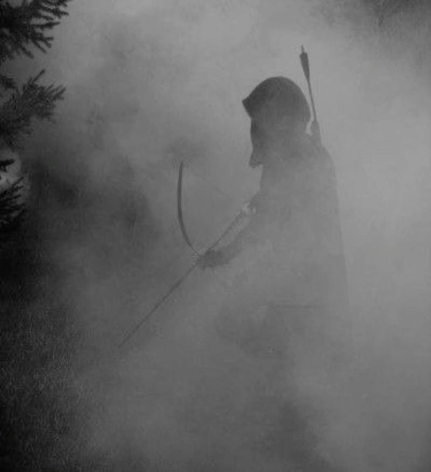

She holds your gaze a moment longer than a scout should. You spoke to her as a person, not a soldier. On the ridge, that is not a small thing.
Loading
Act II - Mountain Path

She holds your gaze a moment longer than a scout should. You spoke to her as a person, not a soldier. On the ridge, that is not a small thing.
Loading